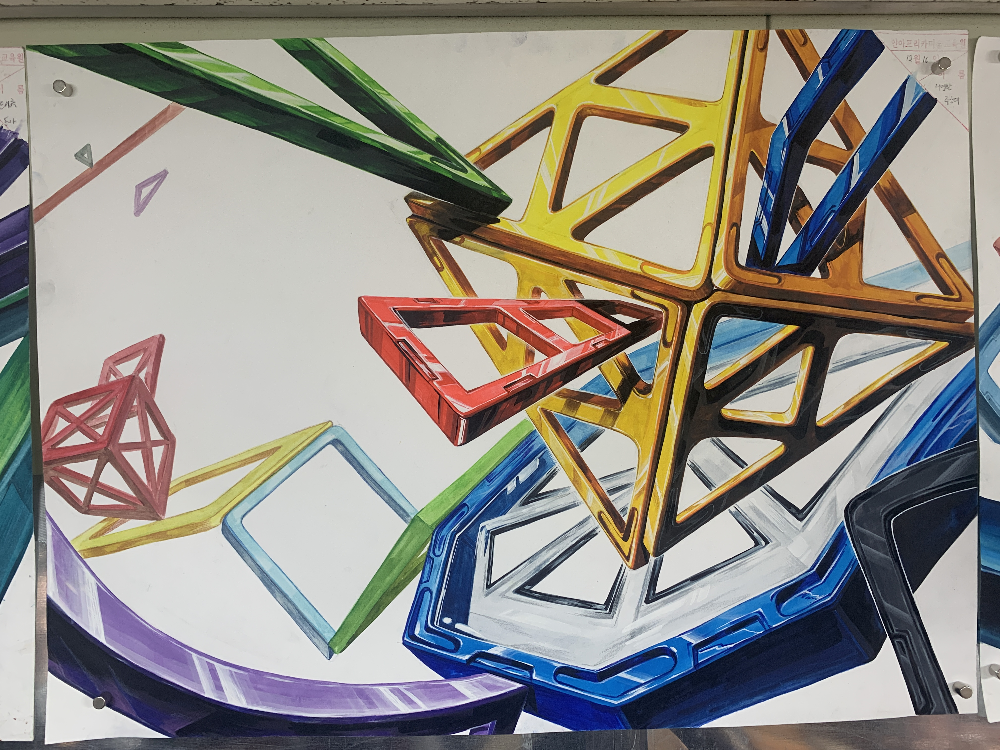
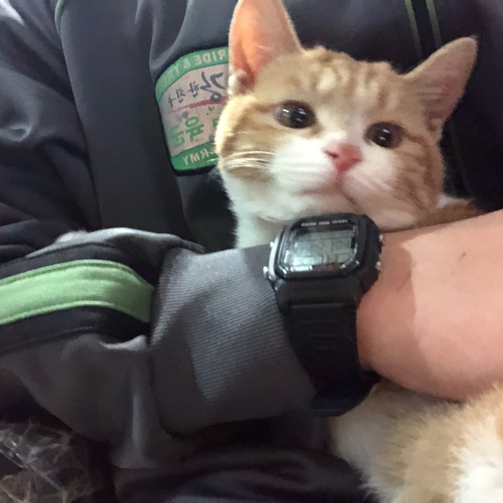
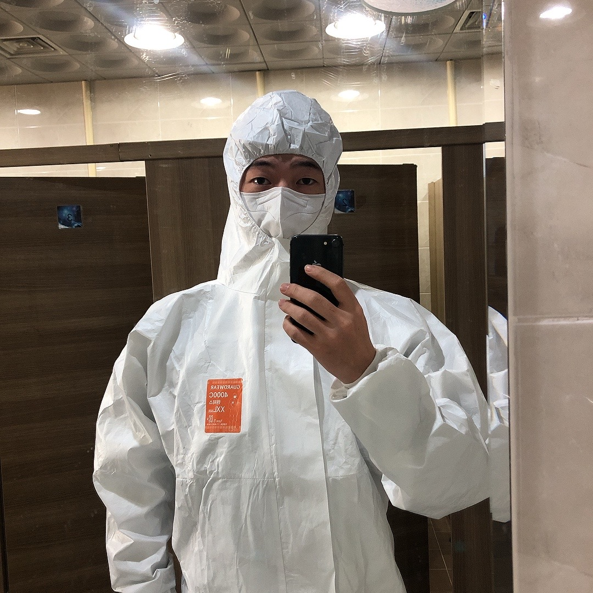

안녕하세요! 저는 디지털 콘텐츠 디자인학과 19학번, 25살 서영환 이라고 합니다.
자기소개에 앞서 멋쟁이 사자 중에서도 가장 멋쟁이들, 가장 최고의 팀장님들과
함께 할 수 있어서 너무나 기쁘고 감사함을 전합니다.
저는 부산에서 태어났지만 경상남도 진주에서 자랐고 생활 했습니다.
어릴때부터 친구들과 운동하는걸 참 좋아했습니다.


또 주변에 있는 것들을 관찰하고 관찰한 것을 바탕으로 그림 그리는걸 좋아했습니다.
그래서인지, 고등학교에 진학해 진로의 결정에 대해 고민할때, 덜 방황하고 확실하게 디자이너가 되겠다는 결심으로
입시미술과 재수를 통해 열심히 한 결과가
여러분들과 함께 있는 지금이 아닐까 싶습니다.
MBTI는 INFP에 가까운 INFJ 입니다.
취미로는 음악과 영화 감상, 운동, 전시회 가기, 산책, 게임 등이 있고 옷과 신발, 가방 등 악세사리도 좋아합니다.
또 머릿속에 있는 생각이나 하고 싶은 말들을 잘하고, 예쁘게 잘 쓰는 사람이 되고 싶어서
가끔씩 좋은 주제나 상황이 있을 때 글을 적어보기도 합니다.
다양하게 이것저것 조금씩 사부작 사부작 하는 걸 좋아하는 편입니다.
또 조용한 카페에 앉아서 서로의 취향이나 관심사, 가치관을 나누는 것도 참 좋아합니다.
 

현재는 전역한지 3개월 정도 지났고 육군에서 훈련소 조교로 의무를 잘 마쳤습니다.
여러분들이 생각하시는, 유튜브에서도 나오는 빨간모자 쓰고 '훈련병들 정숙 합니다' 하는 사람이 맞습니다^^
한 기수마다 250명 정도의 인원들의 생활화 관리, 군인으로서 받아야할 기초적인 군사 교육을 비롯해
먼저 군대에 입대한 사람으로서의 조언 등 많은 일들을 경험했습니다.
그렇게 마친 군생활 후에 바로 학교에 복학해서 또 다시 공부하고 바로 취업 전선에 들어가기 보다는,
좀 더 어리고 시간적 여유가 있을때,
다양한 경험들을 통해 더 나은 사람이 되고 싶다는 생각이 강했기에 휴학을 선택했습니다.
현재는 공부해보고 싶었던 자격증과 인체 독학, 영어 공부 등을 하고 있습니다.
아르바이트를 통해서 배우는 사회생활과 돈의 소중함, 경제 개념도 저에게 큰 도움이 될 거라 생각해서 부주방장으로 펍에서 일도 하고 있습니다.
생각보다 많이 바쁘게 사는 것처럼 적었는데, 실상은 전혀 그렇지 않고 그냥 보통의 대학교 휴학생입니다. 하하.
다만 하루하루를 계속 움직여야 나태해지지 않을 거라는 생각이 있어 열심히 살려고 노력 중입니다.
그런 저의 올해의 목표는
입니다.'상대방이 잘한 것은 더 올려주고, 상대방이 실수 한 것은 덮어주고 도와줄 수 있는 사람'
이렇게 목표를 정해서 한해를 보내다 보면 더 나은 사람에 한발짝 더 가까워 질 수 있으리라 생각합니다.
쓰다보니 굉장히 길어지고 두서가 없어진 것 같습니다.
그럼 이상으로 저의 자기소개를 마치도록 하겠습니다.